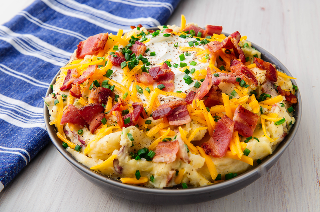

Loaded Mashed Potatoes

Description
Loaded mashed potatoes combine the best parts of a loaded baked potato with traditional creamy mashed potatoes. Delicious, rich, and comforting!
- Bacon
- Potatoes
- Butter
- Sour cream
- Cheddar
- Chives
- Seasonings
Instructions
- Cook the bacon until crisp and brown, then drain on paper towels.
- Boil and drain the potatoes, then return them to the pot.
- Mash or beat the butter into the potatoes, then mash or beat in the sour cream.
- Crumble the bacon into potato mixture, then stir in the cheese and chives.
- Season with salt and pepper.